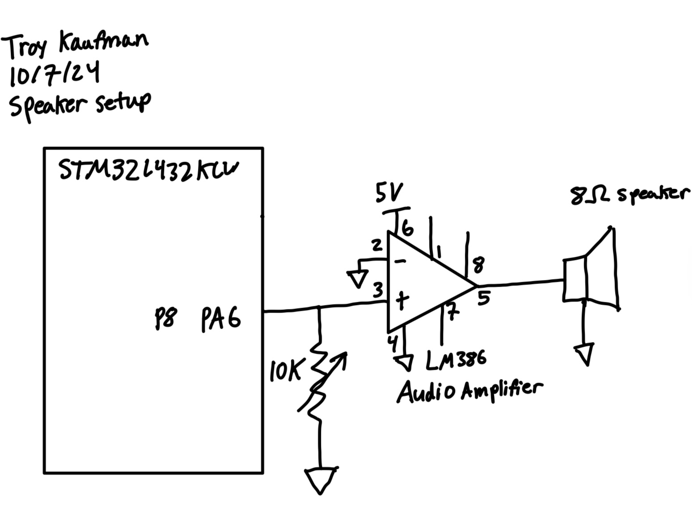
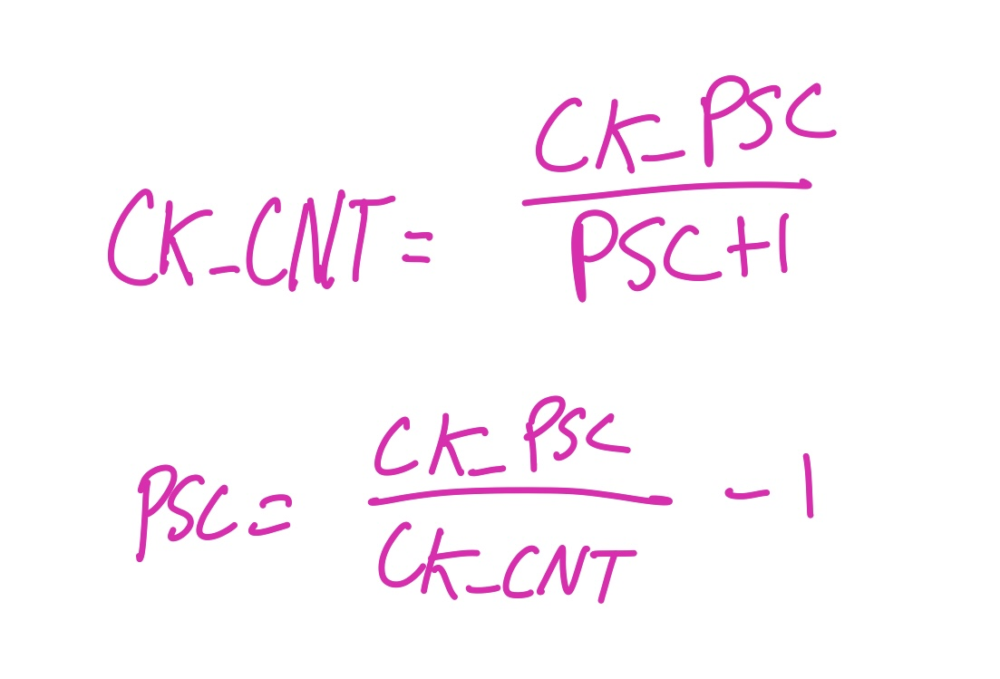
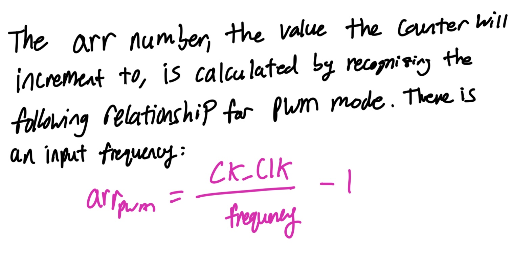
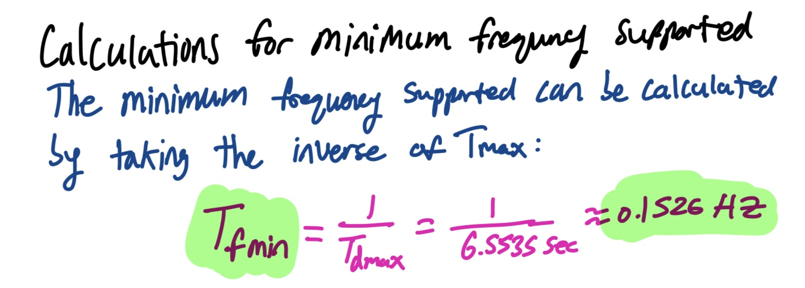
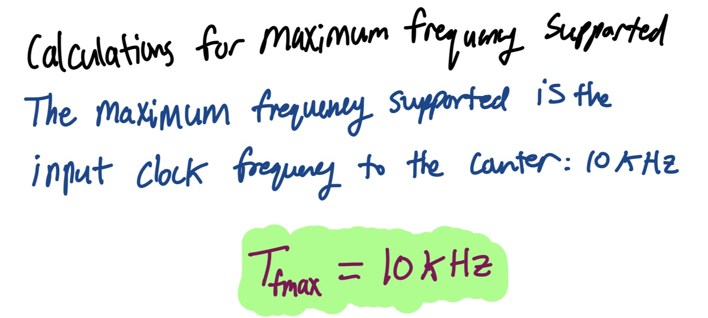
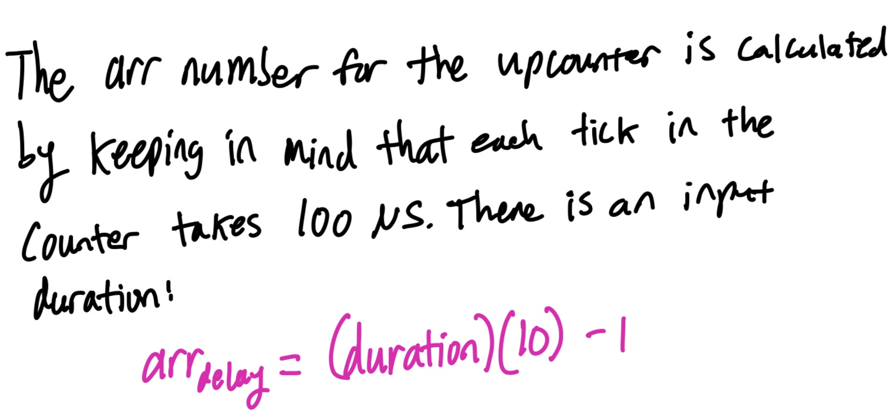
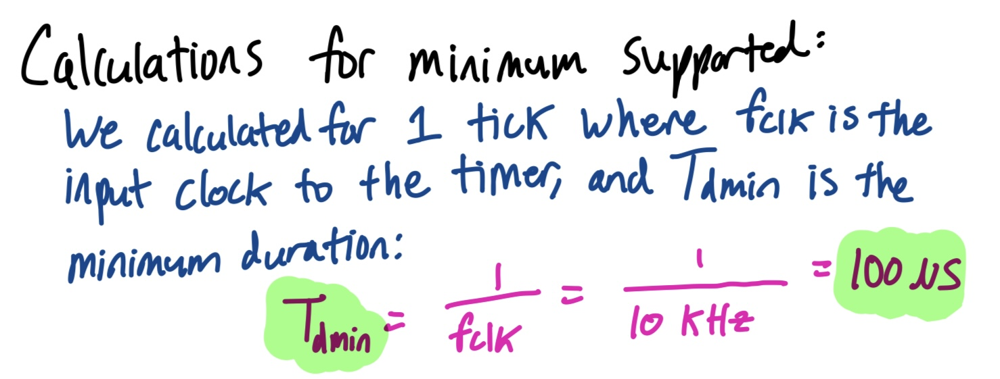
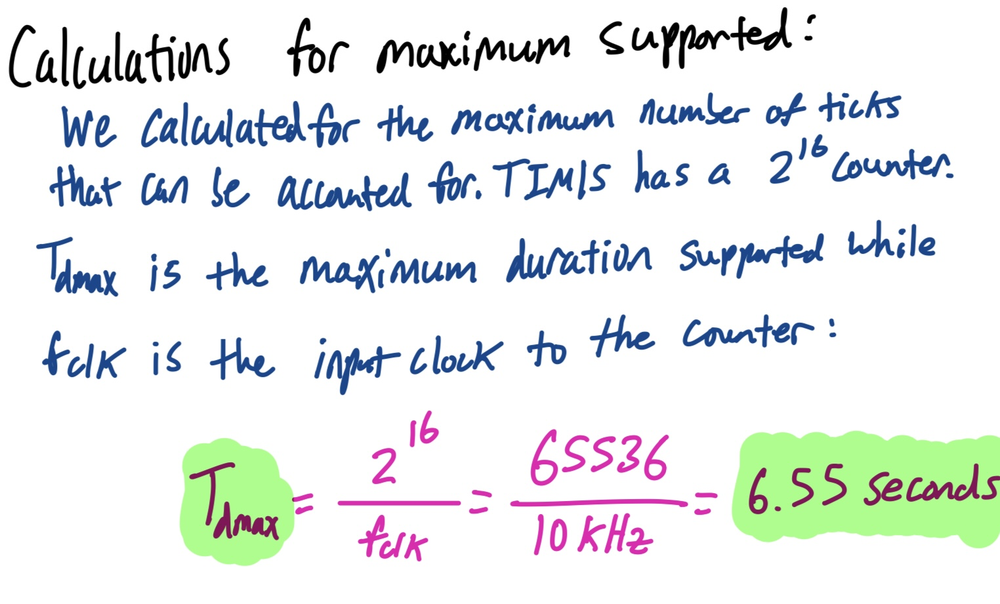
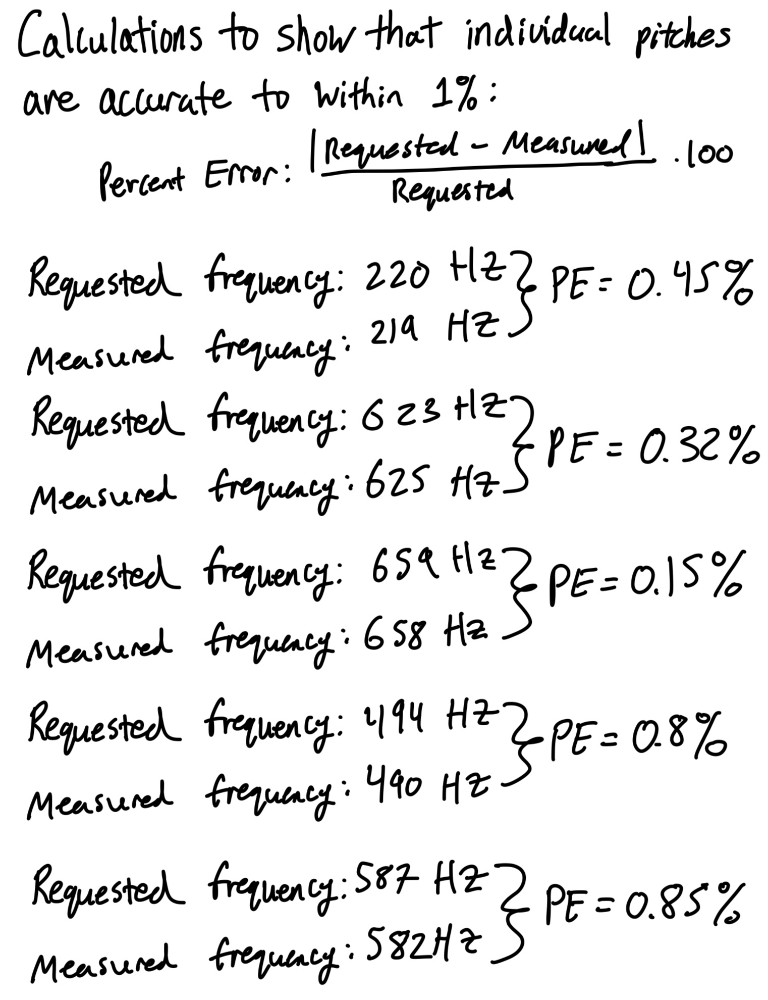
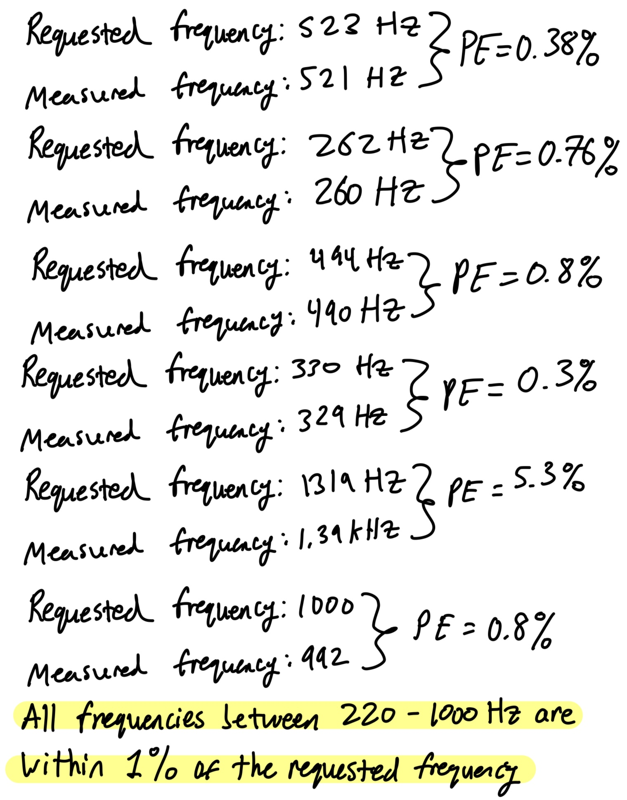

Summary
Students needed to bare metal program their MCUs to play Fur Elise on an 8-ohm speaker. The purpose of this lab was to get students familiar with navigating a large datasheet for relevant information pertaining to the project at hand as well as interact with an MCU on a very low level. The lab intoduced timers which are specialized counters with extreme accuracy. Students needed to configure timers to produce the requested frequency and delay to properly produce the song. Device drivers were made from scratch too.
Design
Prior to this lab, I was familiar with configuring GPIO and RCC registers, however, I needed to understand how timers worked. Before I began designing anything, I researched the various timers available on the MCU. I chose timers 15 and 16 because they had output pads and contained the PWM function unlike other available timers. The harware components this lab were relatively simple to setup:

I focused on how to produce a PWM signal first. The reference manual for this particular STM32xxx on page 906 ambiguously stated how to configure a timer for a PWM operation. I made note of these important signals and bit flipping. I traveled to the timer 16’s memory mapped section. Within my TIMER device driver, I created two functions whose purpose were to initialize the PWM configuration for timer 16 once and to update several configuration registers upon every clock cycle respectively. The most notable registers were the prescalar (PSC) and auto-reload (ARR) registers.
The PSC acted as a clock divider to either improve or decrease resolution according to the designer’s request. In this project I needed my freqeuncies to be within 1% of the requested freqeuncies. So I put my input clock to the counter to be 10 KHz wheras the input clock to the timer was 1 MHz. The relatively low 10 KHz clock speed provided good resolution. I calculated the PSC divisor value by using the following equation:

The next important configuration register to consider was the ARR. This register held the value that the counter would increment towards to in order to produce the requested freqeuncy. I recognized the following relationship between the value housed in ARR and the input frequency where CK_CNT represents the 10 KHz counter input and CK_PSC is the 1 MHz signal.

My design choices for the counter clock forces my minimum and maximum frequency calculations to be the following:
Calculation for minimum frequency supported: This is calculated by first considering the the counter’s input clock frequency (10 KHz) and bit width of the counter (16 bits as discussed in the manual on page 887). By assuming that the counter will reach 65536 ticks, we can find the value for when the MCU will output its lowest freqeuncy:

Calculation for maximum freqeuncy supported: This is calculated very similarly to the minimum frequency calculation. However, the amount of times the counter has clicked will no longer be the counter’s maximum value but rather its minimum value - 1:

Now we will cover how I implemented a delay function for a given duration. It is a similar process to how I implemented the PWM mode for timer 16. I used timer 15, and put the timer in its upcounting mode to strictly increment. Most of the same registers used for implementing the PWM signal were used for the delay function with an exception for a handful that were used for comparison registers. I created initialization and update functions for the delay where the former would only ever update those registers once while the update function would consistently refresh the values in several registers. The major difference between the PWM and delay functions was that there was a while loop with the delay update function checking for when a flag would be set when the duration limit had been satisfied. At that point, the while loop would end and the flag would be reset for the next delay then the next line would run.
The PSC calculation for the delay register is the same as the one in the PWM register.
The ARR calculation is different because we are no longer receiving an input frequency but rather a duration. To build this equation, I had to consider how fast the tick in the counter would increment in upcounting mode (page 893 in the reference manual). With a 10 KHz input counter clock, the counter would tick every 100 us. So, the duration was multiplied by 10 to get the the duration in terms of ms. Then a value of one was subtracted from this to get the following ARR equation:

My design choices for the counter clock forced my minimum and maximum duration calculations to be the following:
Calculation for minimum duration supported: This is the reciprocal of the input counter clock, 10 KHz.

Calculation for maximum duration supported: The maximum duration is calculated by dividing the maximum number of ticks in the 16 bit counter by the input clock frequency entering the counter:

Verification
The design works perfectly. The only quirk about it is that it takes about 4 seconds for the system to start performing the song after the program starts. I spent about 15 hours on this lab.
This is a video of my design playing Fur Elise with volume manipulation from a potentiometer.
This is a video that displays my Happy Birthday song.
Below are calculations that show the individual pitches are accurate to within 1% of the requested freqeuncy. The measured values seen in the images are captured from an oscilloscope.
 
This was a very fun lab, and I can’t wait to play more songs!